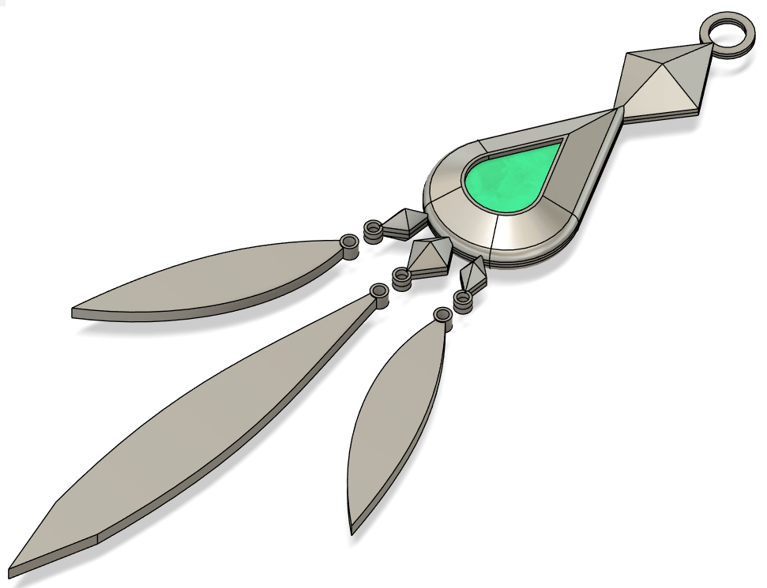

Aventurine-Inspired Keychain (From Honkai: Star Rail)
Model Description
For those familiar with the game Honkai: Star Rail, you're probably pretty familiar with a man named Aventurine, famously known for his incredibile lucky streak and tragic backstory.
If not, well. He's a pretty cool guy.
As one of the Ten Stonehearts, the stone he represents is the Aventurine stone (that's pretty obvious). And he has a pretty neat earring.

This is a subtle keychain that I designed, inspired by his earring. The feathers are made to be attached using jump rings.
3D Printer Settings
Main body max length: 10cm
Main body max width: ~3.3cm
Main body max thickness: 1.27cm
Feather max length: ~1.1cm
Feather max width: ~1.6cm
Feather max thickness: .1cm
Has a ~.8 inch hole at the top to fit jumper ring for keychain. Has ~.254 inch holes on the main body and feathers to connect together via smaller jump rings. Intended to fit on a 220x220x220mm base plate.
The model is sliced into multiple parts:
- - Body1
- - Body2
- - Body3
- - Body4
Here were my 3D printer settings:
3D printer: Creality Ender 3 Pro
Slicer: Ultimaker Cura
Filament type: PLA
Layer Height: .2mm
Wall/Top/Bottom Thickness: .8mm
Infill: 20%
Printing Temp: 200 degrees C
Base Plate Temp: 60 degrees C